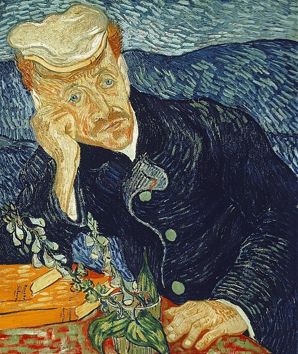

The Healing Gaze: Van Gogh's "Portrait of Dr. Gachet"
Vincent van Gogh's "Portrait of Dr. Gachet," painted in 1890, is a poignant exploration of the relationship between the artist and his physician, Dr. Paul Gachet. This remarkable portrait not only captures the features of a caring doctor but also serves as a reflection of van Gogh's inner struggles and the quest for solace in the midst of mental turmoil.
The Physician's Portrait
Dr. Paul Gachet, a homeopathic doctor with an interest in art, became a source of comfort and support for van Gogh during his stay in Auvers-sur-Oise. The portrait depicts Dr. Gachet with a contemplative expression, his piercing gaze suggesting both empathy and understanding. The choice of subject reflects van Gogh's fascination with portraying individuals who held significant meaning in his life.
The Color Palette
Van Gogh's use of color in "Portrait of Dr. Gachet" is striking and expressive. The doctor is surrounded by a spectrum of blues and greens, creating a tranquil yet melancholic atmosphere. The subdued color palette hints at the emotional complexity of the subject and the nuanced relationship between the artist and his healer.
Symbolism in Details
The various elements within the painting carry layers of symbolism. Dr. Gachet's pose, the carefully rendered hands, and the thoughtful expression convey a sense of introspection. The foxglove flowers on the table, known for their medicinal properties, add another layer of meaning, suggesting both healing and the fragility of life.
The Emotional Undercurrent
While the portrait captures the external features of Dr. Gachet, it also serves as a mirror to van Gogh's emotional state. The artist's signature expressive brushstrokes are evident in the rendering of the doctor's face, suggesting a deep connection between the sitter and the painter. The portrait becomes a conduit for van Gogh to convey his own emotional turbulence.
Legacy and Significance
"Portrait of Dr. Gachet" holds a special place in the oeuvre of van Gogh. It is not only a testament to the artist's skill in portraiture but also a reflection of the profound impact that relationships and connections had on his work. The painting has become an iconic representation of the interplay between art, emotion, and the healing power of human connection.
Conclusion
As we gaze upon "Portrait of Dr. Gachet," we are invited into the intimate space where the artist and the physician intersect. Van Gogh's ability to infuse a portrait with emotional depth allows us to connect not only with the subject but also with the artist's own struggles and aspirations. In the gentle gaze of Dr. Gachet, we find a moment of solace and empathy, a testament to the enduring power of human connection in the face of life's challenges.
In the words of the artist, "I am seeking. I am striving. I am in it with all my heart."